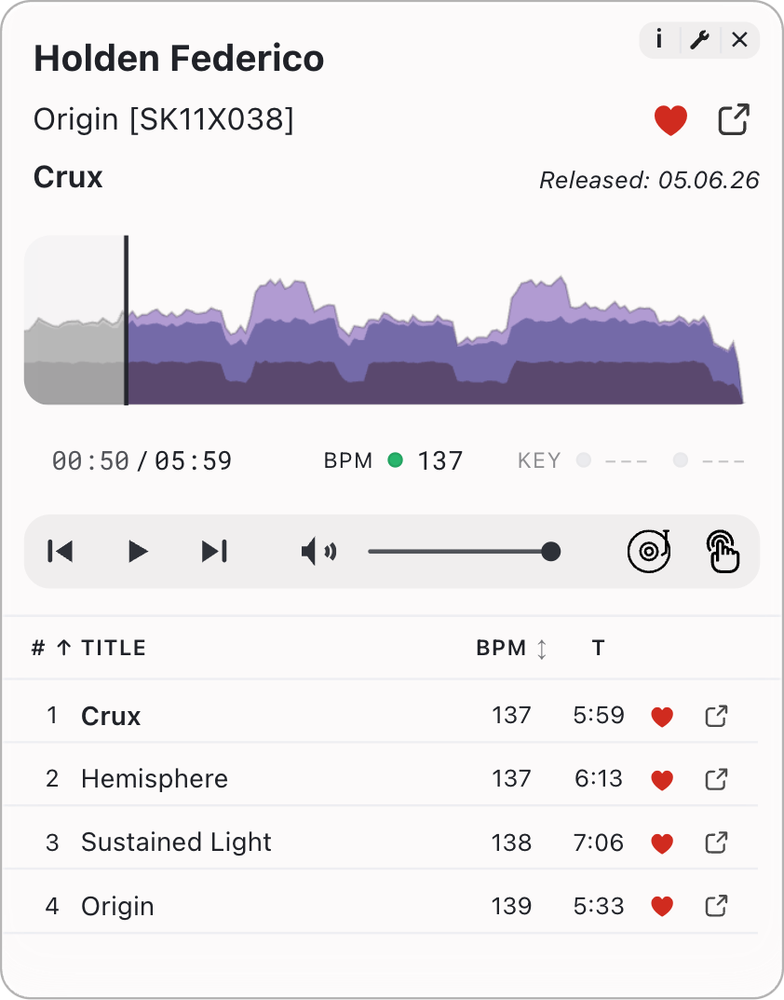

Real BPM, not a guess
Tempo is analyzed from the actual audio with Essentia — the same signal-analysis library used in MIR research. No metadata scraping.
Free · open source · no account · runs entirely on your computer
The DJ-ready player for Bandcamp
A floating player that follows your listening across all of Bandcamp — real BPM analysis, key detection, tempo adjust, and waveform seeking.
Features
Tempo is analyzed from the actual audio with Essentia — the same signal-analysis library used in MIR research. No metadata scraping.
Prefer your ears? Tap along — button or keyboard shortcut — and the panel reads BPM straight from your timing.
Key detection tuned for electronic music — one clear result, or two candidates when the track sits between keys.
Preview any track at your set's tempo. Hear how it'll actually sit in the mix before you buy.
A real rendered waveform. Skip the intro, jump to the drop, check the breakdown.
Heart albums and tracks from the panel — synced against Bandcamp's own collection data, so state is never stale.

Engineering
Most player extensions borrow Bandcamp's built-in player and bolt features on top. Bandcamp Deck runs its own audio engine, built from scratch inside the browser.
Tempo Adjust changes speed without touching pitch — the way professional DJ software works. The cheap shortcut that makes vocals sound like chipmunks is never used, not even as a fallback.
Two complete players run silently in parallel. The next track loads on the quiet one while you listen to the current one, then they swap — no gap, no click at the join.
The full track is held in memory the moment it loads, so dragging the waveform is instant. No waiting for the audio to catch up, no spinner.
BPM and key are measured from the actual audio, inside your browser, using the same library that music researchers use. Nothing is sent anywhere.
When you heart something from the panel, the extension talks directly to Bandcamp's collection API — the same one your Bandcamp profile uses. Your likes and wishlist reflect your real collection, not a guess from the page.
Want the full technical story? Read the audio-engine deep dive →